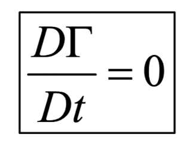
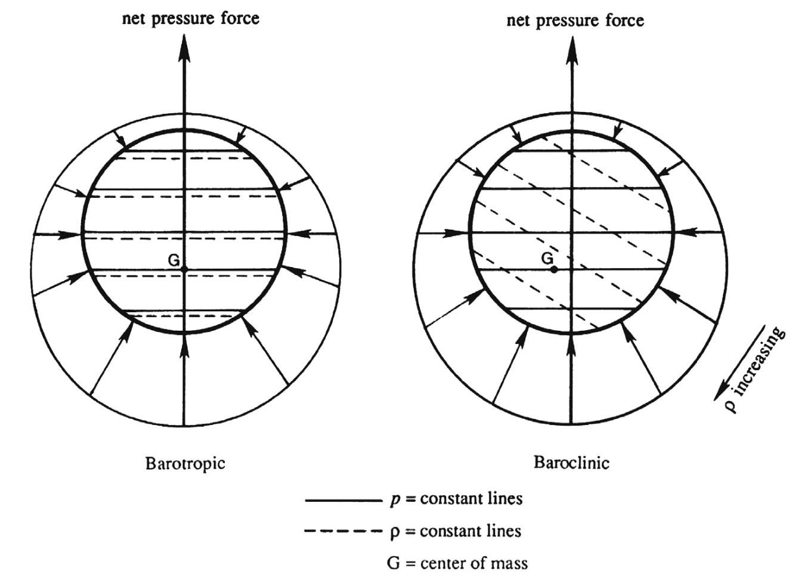
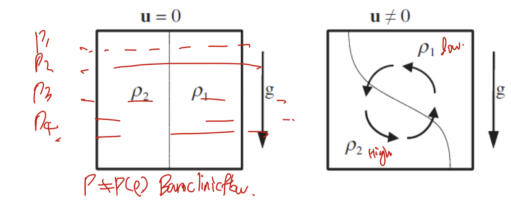

Ch3 Vorticity dynamics_part2_Kelvin's circulation Theorem
지난 시간에
circulation, vorticity의 개념에 대해서 배웠다.
Closed loop 곡선 C
에서 x에서 속도를 u라하자,
x+dx 에서 속도는 u+du 일 것이다.

위 상황에서,
1. Inviscid flow
2. Barotrpoic flow
3. Conservative Body force.
4. Non rotating inertial reference frame
위 조건을 만족한다면, 흐르는 유체를 따라서,
곡선 C의 circulation은 시간에 따라 변하지 않는다.

(증명)
먼저, 미분항을 2개로 쪼개준다.

여기서 첫번째 항부터, 살펴보자.
Conservation of Momentum에서 유도한
Cauchy's Equation of motion
식을 사용하자.

전개해주면, 우리의 가정 Barotropic flow, conservative body force로 인해서,
(위치가 같다면, body force potential의 변화량 = 0)
closed loop에서 0 이 된다.

두번째 항은 속도의 기본 개념을 이용하여, D(dxi)/Dt = du로 전환한후,
closed loop 에서 scalar 의 적분 = 0 이므로, 2식은 zero.

최종적으로, circulation의 시간에 따른 변화량은
stress term만 남게 되는데,
Inviscid flow가정이 더해지면, 0 가 된다.

즉, Kelvin's Circulation theorem에서
하고싶은 말은
Irrotational flow
(circulation = 0)
인 경우,
1. Barotropic flow
2. Inviscid flow
3. Conservative Body force
4. Non-rotating intertial reference frame.
위 조건을 만족한다면
이므로, 계속해서 circulation = 0
Irrotational flow라는 것이다.
두가지 예시를
통해서 위 정의를
정확하게 이해해보자.
밑의 왼쪽 그림을 보게 되면,
Barotropic flow의 정의 를 정확하게 이해할 수 있다.
바로, Pressure , density gradient가 서로 평행하다는 것이다.
즉, 밀도변화와 압력변화가 서로 같은 방향으로 일어난다.

이와 반대로 오른쪽 사진에 gradient가 평행하지 않은 flow를
Baroclinic flow 라고 칭한다.
baroptropic flow같은 경우, inviscid,
conservative body force(graity)인 상황이라면,
회전하지 않고 정지할 것이다.
이와 반대로 baroclinic 의 경우 밀도가 높은 element들은 밑으로 이동하려고 하므로,
위 사진에서는 시계반대방향으로 회전하게 된다.
두번째, 예시를 살펴보자.
밀도가 다른, 두 액체가 존재하고 중력장은 밑으로 작용한 상황에서
Conservative body force는 만족하지만,
pressure gradient 와 density gradient가 평행하지 않아
(압력은 중력방향으로 바뀜, 밀도는 오른쪽방향으로 바뀜)
Barotropic flow를 만족하지 못한다.

따라서, 중력장을 따라서 부력으로 인해 밀도가 높은 element는 밑으로 이동하게 되고,
따라서, 회전유동이 발생한다.